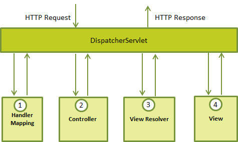

Spring Web MVC Framework
The Spring web MVC framework provides model-view-controller architecture and ready components that can be used to develop flexible and loosely coupled web applications. The MVC pattern results in separating the different aspects of the application (input logic, business logic, and UI logic), while providing a loose coupling between these elements.
The Model encapsulates the application data and in general they will consist of POJO.
The View is responsible for rendering the model data and in general it generates HTML output that the client's browser can interpret.
The Controller is responsible for processing user requests and building appropriate model and passes it to the view for rendering.
The DispatcherServlet
The Spring Web model-view-controller (MVC) framework is designed around a DispatcherServlet that handles all the HTTP requests and responses. The request processing workflow of the Spring Web MVC DispatcherServlet is illustrated in the following diagram:
Following is the sequence of events corresponding to an incoming HTTP request to DispatcherServlet:
After receiving an HTTP request, DispatcherServlet consults the HandlerMapping to call the appropriate Controller.
The Controller takes the request and calls the appropriate service methods based on used GET or POST method. The service method will set model data based on defined business logic and returns view name to the DispatcherServlet.
The DispatcherServlet will take help from ViewResolver to pickup the defined view for the request.
Once view is finalized, The DispatcherServlet passes the model data to the view which is finally rendered on the browser.
All the above mentioned components ie. HandlerMapping, Controller and ViewResolver are parts of WebApplicationContext which is an extension of the plain ApplicationContext with some extra features necessary for web applications.
Required Configuration
You need to map requests that you want the DispatcherServlet to handle, by using a URL mapping in the web.xml file. The following is an example to show declaration and mapping for HelloWeb DispatcherServlet example:
<web-app id="WebApp_ID" version="2.4"
xmlns="http://java.sun.com/xml/ns/j2ee"
xmlns:xsi="http://www.w3.org/2001/XMLSchema-instance"
xsi:schemaLocation="http://java.sun.com/xml/ns/j2ee
http://java.sun.com/xml/ns/j2ee/web-app_2_4.xsd">
<display-name>Spring MVC Application</display-name>
<servlet>
<servlet-name>HelloWeb</servlet-name>
<servlet-class>
org.springframework.web.servlet.DispatcherServlet
</servlet-class>
<load-on-startup>1</load-on-startup>
</servlet>
<servlet-mapping>
<servlet-name>HelloWeb</servlet-name>
<url-pattern>*.jsp</url-pattern>
</servlet-mapping>
</web-app>
The web.xml file will be kept WebContent/WEB-INF directory of your web application. OK, upon initialization of HelloWeb DispatcherServlet, the framework will try to load the application context from a file named [servlet-name]-servlet.xml located in the application's WebContent/WEB-INF directory. In this case our file will be HelloWeb-servlet.xml.
Next, <servlet-mapping> tag indicates what URLs will be handled by the which DispatcherServlet. Here all the HTTP requests ending with .jsp will be handled by the HelloWeb DispatcherServlet.
If you do not want to go with default filename as [servlet-name]-servlet.xml and default location as WebContent/WEB-INF, you can customize this file name and location by adding the servlet listener ContextLoaderListener in your web.xml file as follows:
<web-app...>
<!-------- DispatcherServlet definition goes here----->
....
<context-param>
<param-name>contextConfigLocation</param-name>
<param-value>/WEB-INF/HelloWeb-servlet.xml</param-value>
</context-param>
<listener>
<listener-class>
org.springframework.web.context.ContextLoaderListener
</listener-class>
</listener>
</web-app>
Now, let us check the required configuration for HelloWeb-servlet.xml file, placed in your web application's WebContent/WEB-INF directory:
<beans xmlns="http://www.springframework.org/schema/beans"
xmlns:context="http://www.springframework.org/schema/context"
xmlns:xsi="http://www.w3.org/2001/XMLSchema-instance"
xsi:schemaLocation="
http://www.springframework.org/schema/beans
http://www.springframework.org/schema/beans/spring-beans-3.0.xsd
http://www.springframework.org/schema/context
http://www.springframework.org/schema/context/spring-context-3.0.xsd">
<context:component-scan base-package="com.tutorialspoint" />
<bean class="org.springframework.web.servlet.view.InternalResourceViewResolver">
<property name="prefix" value="/WEB-INF/jsp/" />
<property name="suffix" value=".jsp" />
</bean>
</beans>
Following are the important points about HelloWeb-servlet.xml file:
The [servlet-name]-servlet.xml file will be used to create the beans defined, overriding the definitions of any beans defined with the same name in the global scope.
The <context:component-scan...> tag will be use to activate Spring MVC annotation scanning capability which allows to make use of annotations like @Controller and @RequestMapping etc.
The InternalResourceViewResolver will have rules defined to resolve the view names. As per the above defined rule, a logical view named hello is delegated to a view implementation located at /WEB-INF/jsp/hello.jsp .
Next section will show you how to create your actual components ie. Controller, Model and View.
Defining a Controller
DispatcherServlet delegates the request to the controllers to execute the functionality specific to it. The @Controller annotation indicates that a particular class serves the role of a controller. The @RequestMapping annotation is used to map a URL to either an entire class or a particular handler method.
@Controller
@RequestMapping("/hello")
public class HelloController{
@RequestMapping(method = RequestMethod.GET)
public String printHello(ModelMap model) {
model.addAttribute("message", "Hello Spring MVC Framework!");
return "hello";
}
}
The @Controller annotation defines the class as a Spring MVC controller. Here, the first usage of @RequestMapping indicates that all handling methods on this controller are relative to the /hello path. Next annotation @RequestMapping(method = RequestMethod.GET) is used to declare the printHello() method as the controller's default service method to handle HTTP GET request. You can define another method to handle any POST request at the same URL.
You can write above controller in another form where you can add additional attributes in @RequestMapping as follows:
@Controller
public class HelloController{
@RequestMapping(value = "/hello", method = RequestMethod.GET)
public String printHello(ModelMap model) {
model.addAttribute("message", "Hello Spring MVC Framework!");
return "hello";
}
}
The value attribute indicates the URL to which the handler method is mapped and the method attribute defines the service method to handle HTTP GET request. There are following important points to be noted about the controller defined above:
You will defined required business logic inside a service method. You can call another methods inside this method as per requirement.
Based on the business logic defined, you will create a model within this method. You can setter different model attributes and these attributes will be accessed by the view to present the final result. This example creates a model with its attribute "message".
A defined service method can return a String which contains the name of the view to be used to render the model. This example returns "hello" as logical view name.
Creating JSP Views
Spring MVC supports many types of views for different presentation technologies. These include - JSPs, HTML, PDF, Excel worksheets, XML, Velocity templates, XSLT, JSON, Atom and RSS feeds, JasperReports etc. But most commonly we use JSP templates written with JSTL. So let us write a simple hello view in /WEB-INF/hello/hello.jsp:
<html>
<head>
<title>Hello Spring MVC</title>
</head>
<body>
<h2>${message}</h2>
</body>
</html>
Here ${message} is the attribute which we have setup inside the Controller. You can have multiple attributes to be displayed inside your view.
Spring Web MVC Framework Examples:
Based on the above concepts, let us check few important examples which will help you in building your Spring Web Applications:
| S.N. | Example & Description |
|---|---|
| 1 | Spring MVC Hello World Example This example will explain how to write a simple Spring Web Hello World application. |
| 2 | Spring MVC Form Handling Example This example will explain how to write a Spring Web application using HTML forms to submit the data to the controller and display back a processed result. |
| 3 | Spring Page Redirection Example Learn how to use page redirection functionality in Spring MVC Framework. |
| 4 | Spring Static Pages Example Learn how to access static pages along with dynamic pages in Spring MVC Framework. |
| 5 | Spring Exception Handling Example Learn how to handle exceptions in Spring MVC Framework. |